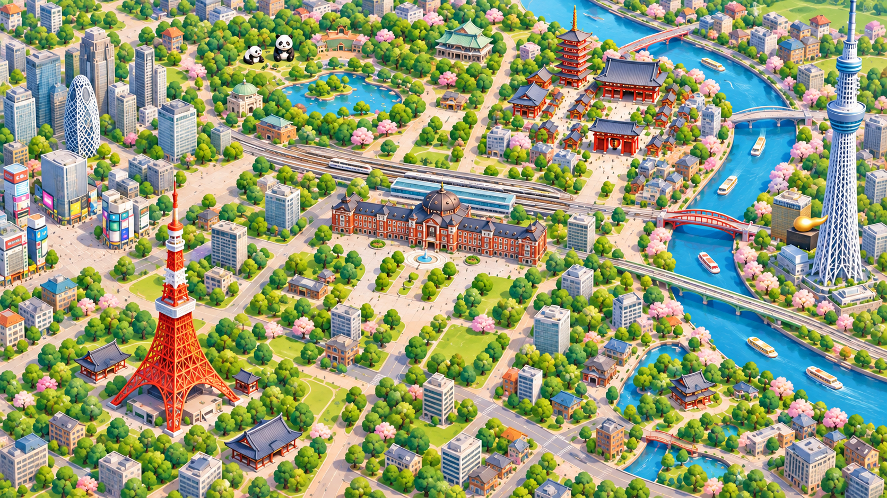

<!doctype html>
<html lang="ja"><meta charset="utf-8"><meta name="viewport" content="width=device-width,initial-scale=1,viewport-fit=cover"><title>大喜利ダイス｜横持ちマップ原画</title>
<style>
*{box-sizing:border-box}html,body{margin:0;width:100%;height:100%;overflow:hidden}body{font-family:"Yu Gothic","Meiryo",sans-serif;font-weight:700;color:#223443;background:#223443}button,textarea{font:inherit}button{cursor:pointer;color:inherit;border:2px solid #263f51;border-radius:8px;background:#fff;padding:8px 14px;min-height:44px;box-shadow:0 3px 0 #263f5155}button:focus-visible,textarea:focus-visible{outline:4px solid #0082d3;outline-offset:3px}button:active{box-shadow:none}button:disabled{background:#d7dfe2;box-shadow:none;color:#536875}button[aria-pressed=true],.primary{background:#ffe46f}#game{height:var(--screen-height,100dvh);position:relative;isolation:isolate;overflow:hidden}.camera{position:absolute;left:50%;top:50%;transform:translate(-50%,-50%);width:max(100vw,177.778dvh);height:max(100dvh,56.25vw);z-index:-2}.camera img{width:100%;height:100%;display:block}.hud{position:absolute;top:max(12px,env(safe-area-inset-top));left:max(16px,env(safe-area-inset-left));right:max(16px,env(safe-area-inset-right));display:flex;align-items:start;justify-content:space-between;gap:12px}.plate{background:#fffefa;border:2px solid #253e51;border-radius:8px;box-shadow:0 3px 0 #253e5144}.player{display:flex;align-items:center;gap:12px;padding:6px 14px 6px 6px}.number{display:grid;place-items:center;background:#206caf;color:white;border-radius:50%;width:32px;height:32px}.player b{font-size:22px}.destination{padding:6px 16px;font-size:20px}.destination small{display:block;font-size:12px;color:#425765}.landmark{position:absolute;padding:3px 10px;border:2px solid #314b5a;background:#fffefa;border-radius:5px;font-size:clamp(13px,1.8vw,20px);box-shadow:0 2px 0 #314b5a55;transform:translate(-50%,-50%);white-space:nowrap}.ueno{left:36%;top:29%}.tokyo{left:49%;top:57%}.asakusa{left:68%;top:30%;background:#ffe46f}.tower{left:22%;top:82%}.token{position:absolute;left:50%;top:57%;transform:translate(-50%,-100%);background:#206caf;color:white;border:3px solid #fff;outline:2px solid #253e51;box-shadow:0 5px 0 #253e5144;border-radius:45% 45% 25% 25%;width:38px;height:45px;display:grid;place-items:center;font-size:24px}.candidate{position:absolute;transform:translate(-50%,-50%);border-radius:50%;font-size:20px;width:44px;padding:0;background:#fffefa}.candidate.a{left:40%;top:47%}.candidate.b{left:61%;top:57%}.steps{position:absolute;right:max(16px,env(safe-area-inset-right));top:84px;padding:5px 14px}.steps b{font-size:32px;margin:0 6px}.bottom{position:absolute;bottom:max(12px,env(safe-area-inset-bottom));left:max(16px,env(safe-area-inset-left));right:max(16px,env(safe-area-inset-right));display:flex;align-items:end;gap:12px;justify-content:space-between}.message{padding:8px 14px;display:flex;align-items:center;gap:16px;font-size:16px;max-width:70%}.message p{margin:0;line-height:1.4}.message small{display:block;font-size:11px;color:#425765}.review{position:absolute;bottom:78px;left:max(16px,env(safe-area-inset-left));padding:3px 8px;background:#fffefaed;font-size:11px;border-radius:3px;color:#314b5a}.drawer{position:absolute;z-index:5;bottom:66px;right:16px;background:#fff;padding:12px;border:2px solid #253e51;border-radius:8px;width:250px;display:grid;gap:8px}.drawer small{font-size:12px;font-weight:500}.overlay{position:absolute;inset:0;background:#172a4038;display:grid;place-items:center;padding:70px 14% 16px}.dialog{width:100%;max-height:100%;overflow:auto;background:#fffefa;border:3px solid #253e51;border-radius:12px;box-shadow:0 5px 0 #253e5144}.dialoghead{background:#206caf;color:white;padding:9px 18px;display:flex;justify-content:space-between}.content{padding:12px 20px}.content h1{font-size:24px;line-height:1.4;margin:0 0 10px}.content textarea{display:block;width:100%;height:62px;min-height:50px;border:2px solid #253e51;border-radius:4px;background:#f4f7fa;font-size:18px;padding:8px;color:#223443;resize:none}.actions{display:flex;align-items:center;justify-content:space-between;gap:12px;margin-top:8px}.actions small{font-size:12px}.answertext{font-size:26px;line-height:1.5;margin:10px 0}.score{border-top:2px solid #d8e1e5;display:flex;align-items:center;gap:16px;padding-top:8px}.score b{font-size:38px}.score span{font-size:22px}.question{font-size:14px;color:#4d6170}.rotate{display:none}.art-only .hud,.art-only .bottom,.art-only .steps,.art-only .landmark,.art-only .token,.art-only .candidate,.art-only .review{display:none}.art-only #artBack{display:block}#artBack{display:none;position:absolute;right:16px;bottom:16px}.hidden,[hidden]{display:none!important}@media(orientation:portrait){.rotate{display:grid;position:absolute;z-index:10;inset:0;place-content:center;text-align:center;gap:16px;background:#172c46dc;color:white;padding:32px}.rotate b{font-size:25px}.rotate p{font-size:16px;font-weight:500}}@media(max-height:430px){.hud{top:8px}.player b{font-size:18px}.destination{font-size:18px}.steps{top:70px}.overlay{padding:62px 17% 8px}.dialoghead{padding:6px 16px}.content{padding:10px 16px}.content h1{font-size:20px}.answertext{font-size:23px}.score b{font-size:32px}.review{bottom:71px}}@media(max-height:290px){.hud,.review{display:none}.overlay{padding:6px 12%}.content h1{font-size:17px}.content textarea{height:48px}.dialoghead{font-size:13px}}
</style>
<main id="game" aria-label="横持ちマップのデザイン見本">
<div class="camera"><span class="landmark ueno">上野</span><span class="landmark tokyo">東京</span><span class="landmark asakusa">⚑ 浅草</span><span class="landmark tower">東京タワー</span><span class="token" aria-label="プレイヤー1の仮コマ">1</span><button class="candidate a" data-route="A" aria-label="候補Aを選ぶ" aria-pressed="false">A</button><button class="candidate b" data-route="B" aria-label="候補Bを選ぶ" aria-pressed="false">B</button></div>
<div class="hud"><div class="plate player"><span class="number">1</span><span>たろう</span><b>28万円</b></div><div class="plate destination">⚑ 目的地　浅草<small>到着で30万円</small></div></div>
<div class="plate steps" id="steps">あと<b>4</b>マス</div>
<div class="bottom"><div class="plate message" id="message"><p id="routeText">進む先を選ぼう<small>地図上の A・B をタップ</small></p><button class="primary" id="confirm" disabled>決定</button></div><button id="menu" aria-expanded="false">見本を切替</button></div>
<div class="review">原画・配置の試作 ／ 経路未接続・コマは仮</div>
<div class="drawer" id="drawer" hidden><button data-view="map">マップを見る</button><button data-view="answer">回答の配置を見る</button><button data-view="result">結果の配置を見る</button><button id="art">原画だけを見る</button><small>切替はレビュー用。ゲーム操作ではありません。</small></div>
<section class="overlay" id="answer" aria-label="回答の配置見本" hidden><div class="dialog"><div class="dialoghead"><span>たろうのお題</span><span>あと15秒</span></div><div class="content"><h1>東京タワーが突然しゃべった。<br>最初のひと言とは？</h1><textarea id="entry" aria-label="あなたの回答" maxlength="100" placeholder="回答を書こう"></textarea><div class="actions"><small>時計は固定・採点は表示見本</small><button class="primary" id="send">回答を発表</button></div></div></div></section>
<section class="overlay" id="result" aria-label="結果の配置見本" hidden><div class="dialog"><div class="dialoghead">たろうの回答</div><div class="content"><div class="question">東京タワーが突然しゃべった。最初のひと言とは？</div><p class="answertext" id="spoken">「スカイツリーには内緒にしてね。」</p><div class="score"><b>4点</b><span>4マス進める！</span></div><div class="actions"><small>4点は見本値です</small><button class="primary" data-view="map">マップへ</button></div></div></div></section>
<button id="artBack">UIを戻す</button><div class="rotate"><b>スマホを横にしてね</b><p>東京マップを広く見ながら遊びます。</p><p>PCでは横長のウィンドウで確認できます。</p></div>
</main>
<script>
const $=id=>document.getElementById(id);let view='map';
function show(name){view=name;$('answer').hidden=name!=='answer';$('result').hidden=name!=='result';$('steps').hidden=name!=='map';$('message').hidden=name!=='map';document.querySelectorAll('.candidate').forEach(el=>el.hidden=name!=='map');$('drawer').hidden=true;$('menu').setAttribute('aria-expanded','false');const target=name==='map'?$('menu'):$(name);target.tabIndex=-1;target.focus({preventScroll:true});}
$('menu').onclick=()=>{$('drawer').hidden=!$('drawer').hidden;$('menu').setAttribute('aria-expanded',String(!$('drawer').hidden))};document.querySelectorAll('[data-view]').forEach(el=>el.onclick=()=>show(el.dataset.view));
document.querySelectorAll('[data-route]').forEach(el=>el.onclick=()=>{document.querySelectorAll('[data-route]').forEach(r=>r.setAttribute('aria-pressed',String(r===el)));$('routeText').textContent='候補 '+el.dataset.route+' を選択中';$('confirm').disabled=false});
$('confirm').onclick=()=>{$('routeText').textContent='選択表示の見本です';$('confirm').disabled=true;document.querySelectorAll('[data-route]').forEach(el=>el.setAttribute('aria-pressed','false'))};
$('send').onclick=()=>{$('spoken').textContent=$('entry').value.trim()?'「'+$('entry').value+'」':'（回答なしの表示見本）';show('result')};
$('art').onclick=()=>{show('map');document.body.classList.add('art-only')};$('artBack').onclick=()=>document.body.classList.remove('art-only');
function resize(){document.documentElement.style.setProperty('--screen-height',(window.visualViewport?.height||window.innerHeight)+'px')}window.visualViewport?.addEventListener('resize',resize);resize();
</script></html>
